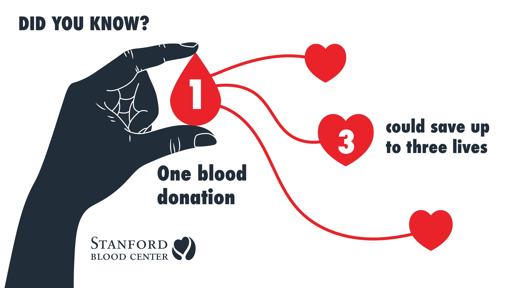

Life Line Blood Bank is dedicated to saving lives by ensuring a
reliable and efficient blood donation system. Our primary goal is to
bridge the gap between blood donors and those in need, making blood
readily available in times of emergency. We strive to promote voluntary
blood donation, create awareness, and maintain a safe and transparent blood
supply chain. Through innovation and technology, we aim to build a future
where no life is lost due to blood shortages.
Join us in our journey to make every drop count!
